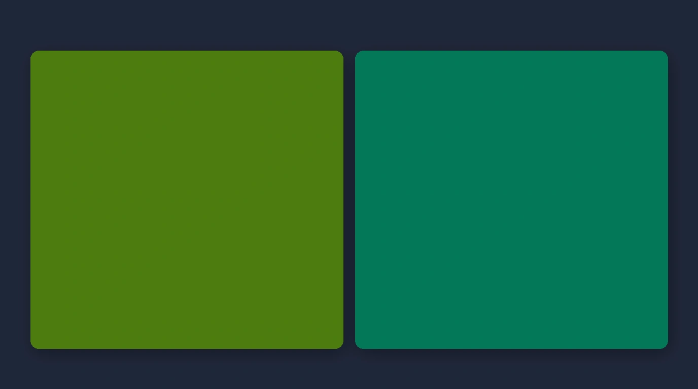
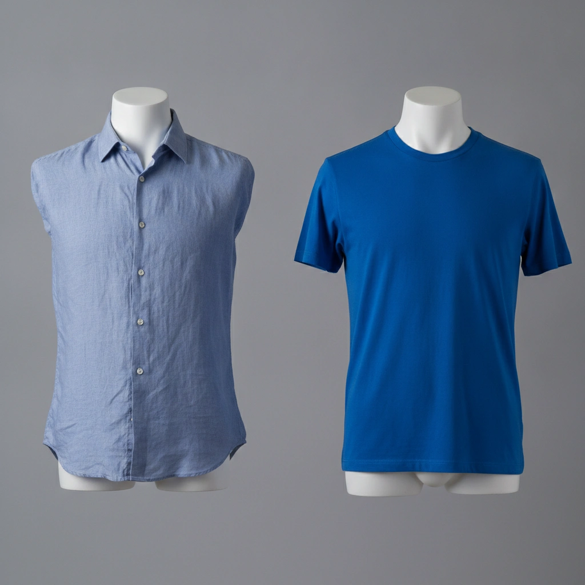
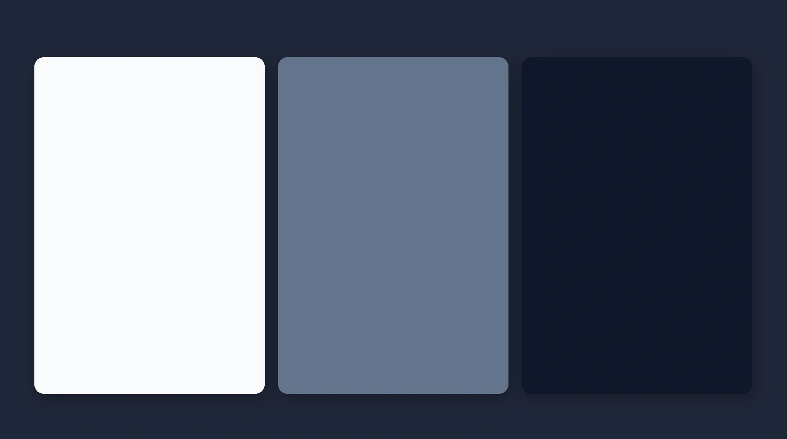
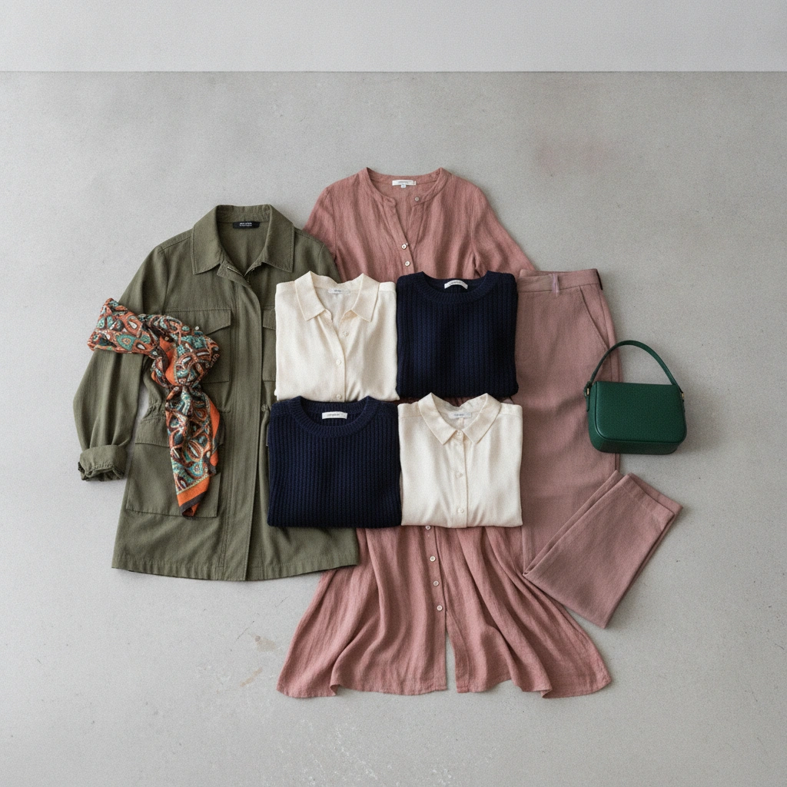
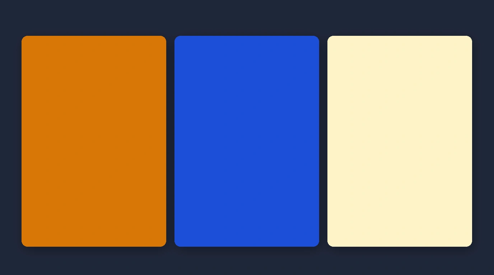

Published: August 13, 2026 • Masterclass Guide
How Do I Know What Colors Suit Me? A Practical Guide to Finding Your Best Clothing Colours

QUESTION → OBSERVE → COMPARE → NARROW DOWN → BUILD PALETTE
Stop guessing which clothes look good on you. Learn a practical, step-by-step observation method to discover your flattering shades and build a personal colour palette.
You slip on a specific shirt or dress, glance in the mirror, and instantly feel radiant. The colour seems to make your face look clear and rested. Yet another garment in a shade you love on a mannequin makes your complexion look flat or tired.
If you've ever asked “how do I know what colors suit me?”, you are not alone. Finding your best clothing colours is not about memorizing a rigid list of rules based strictly on whether your skin is light, medium, or deep.
It is about learning how to observe, compare, and identify patterns in how different clothing hues interact with your natural complexion. This guide walks you through a practical, repeatable process to discover your personal colour palette.
How Do I Know What Colors Suit Me?
To know what colors suit you, test clothing swatches near your face under natural light. Compare warm vs. cool tones (olive vs. emerald) and soft vs. vivid shades. Identify patterns in which hues make your face look balanced, then assemble them into a personal 4-tier palette.
Start With Your Natural Colouring
Before testing garments, remember that four core characteristics influence your overall colour harmony:
- • Undertone: The subsurface warm (golden), cool (blue/pink), or neutral balance beneath your skin.
- • Skin Depth: The overall lightness or darkness of your complexion.
- • Contrast: The lightness-to-darkness difference between your hair, eyes, and skin.
- • Colour Intensity / Clarity: Whether your features harmonise better with muted or vivid tones.
For a deep dive into the underlying physics of undertone and depth, read our companion guide to choosing clothes for your skin tone → or explore understanding your personal colour analysis →
Step 1 — Notice Which Colours Make You Look More Balanced
When holding a garment close to your face, train your eyes to observe visual harmony rather than simply liking the clothing piece itself.
OBSERVATION CHECKLIST:
Complexion appears smooth and balanced; eyes look bright; under-eye area looks even.
Clothing colour overpowers your face; creates harsh shadow lines; skin looks pale or sallow.
Step 2 — Compare Warm and Cool Versions of a Colour
The most practical way to test your undertone direction is to compare warm and cool variants within the same broad colour family side by side:

Warm Olive / Moss
Golden-yellow subsurface base. Pairs with warm complexions.
Cool Emerald / Jade
Blue-pink subsurface base. Pairs with cool complexions.
Warm Cream / Ivory
Soft buttered undertone. Flattering on golden skin.
Crisp Pure White
Stark blue-white tone. Radiant on cool complexions.
Step 3 — Compare Soft and Vivid Colours
Warmth is only half the equation. You must also discover whether your natural colouring thrives in soft, muted tones or clear, vivid hues:

Slate Blue & Muted Rose
Blended with grey or brown tones. Ideal for delicate or soft-contrast complexions.
Bright Cobalt & Fuchsia
Highly saturated and punchy. Harmonises with high-contrast, clear complexions.

Step 4 — Pay Attention to Contrast
The lightness-to-darkness difference between your hair, eyes, and skin determines your ideal clothing contrast:
Low Contrast
Features blend closely in value. Thrives in tonal, monochrome, or low-contrast outfits.
Medium Contrast
Balanced spread between features. Pairs effortlessly with classic navy and cream combinations.
High Contrast
Sharp spread (e.g. dark hair with light skin). Looks stunning in bold black-and-white pairing.
Step 5 — Test Colours Near Your Face
When testing garments, focus on items worn closest to your face—such as shirts, kurtas, dresses, sarees, scarves, and jackets.
Stand near a window in natural daylight (avoiding harsh indoor artificial lighting) and hold two swatches side by side under your chin. Observe which hue immediately elevates your face.
Step 6 — Look for Patterns, Not One Perfect Colour
The ultimate goal of colour discovery is not finding one single magical shade. It is discovering recurring patterns across your flattering test swatches:
COMMON PATTERN QUESTIONS:
- Do your best colours consistently lean warm (golden) or cool (blue)?
- Do you look better in rich jewel tones or soft muted pastels?
- Do your winning hues share medium-to-deep depth or light airiness?
Build a Small Personal Palette
Turn your observations into an actionable, 4-tier personal clothing palette:

Navy, Cream, Charcoal, or Warm Beige. Forms the workhorse foundation for trousers and jackets.
Olive, Soft Rose, Sapphire, or Terracotta. Versatile shades for daily shirts and tops.
Mustard, Emerald, or Berry. Adds pops of visual depth via dupattas, scarves, or knitwear.
Fuchsia or Peacock Blue. Bold head-turning shades for weddings and festive celebrations.
Use Your Palette With Clothes You Already Own
Discovering your personal colour palette is most useful when applied directly to your closet.
Cataloging your clothes digitally allows you to view your inventory by colour category and filter out items that don't fit your palette. Organize your wardrobe with a Digital Wardrobe →
Turn Your Colours Into Outfits
Once you know your palette and closet inventory, combine your tops, bottoms, and layers into harmonious outfits based on occasion and weather.
Generate automatic outfit combinations with an AI Outfit Planner →
What If You're Still Unsure?
Manual visual assessment can sometimes feel confusing because light changes, fabric textures vary, and personal bias interferes with judgment.
An AI facial scan provides an objective evaluation of your skin depth, undertone, and contrast spread. Explore AI Personal Colour Analysis →
And When You're Shopping…
Before buying a new garment, evaluate whether its shade matches your personal palette and connects with your existing wardrobe using Scan Before You Buy →

A Simple 10-Minute Colour Test
THE 6-SWATCH DISCOVERY TEST:
Select 6 items from your closet: 2 warm colours, 2 cool colours, 1 neutral, 1 vivid colour, and 1 muted colour.
Hold each item near your face in natural daylight and note down which shades make your skin look smooth, balanced, and vibrant!
Your Best Colours Are a Starting Point, Not a Rulebook
Colour guidance should make getting dressed easier and more joyful—not restrict your creativity. Use your personal palette as a flexible framework to express your unique style every single day.
Related Masterclass Guides
Colour Discovery FAQs
To know what colors suit you, test clothing swatches near your face under natural daylight. Observe whether a color makes your face appear balanced and clear or washed out. Compare warm vs cool shades (e.g. olive vs emerald) and soft vs vivid tones to discover your pattern.
Find your best clothing colors by discovering recurring patterns across four traits: undertone warmth (golden vs blue), skin depth, contrast levels (high vs low spread between hair, eyes, and skin), and colour intensity (muted vs vivid).
A colour suits you when it harmonises with your natural features—making your face look clear and rested without competing for attention or creating harsh shadow lines under your eyes.
Build a personal colour palette by grouping your flattering shades into four functional categories: Core Neutrals (2-4 base shades like navy or cream), Everyday Colours (3-5 core items), Accent Colours (2-3 popup shades), and Statement Colours (1-2 focal pieces).
Compare two garments of the same colour family near your face—such as warm mustard vs cool sapphire, or warm cream vs cool crisp white. The shade that makes your skin look radiant and even-toned reveals your undertone direction.
Test a muted shade (like soft slate blue or sage green) against a vivid shade (like bright royal blue or neon green). If vivid colours overpower your features, soft muted tones will offer much better visual balance.
Discover Your Best Colours
Download Colourity on Android to analyze your colours and match outfits for free.
Get Colourity AppNot sure where you fall? a personal colour palette check gives you a starting point before you commit to any of these picks.
Related reading: How Do I Choose Clothes for My Skin Tone? A Practical Guide to Undertone, Contrast and Colour · What's My Colour Season? A Simple Undertone Test · Warm vs Cool vs Neutral Undertone: How to Tell the Difference